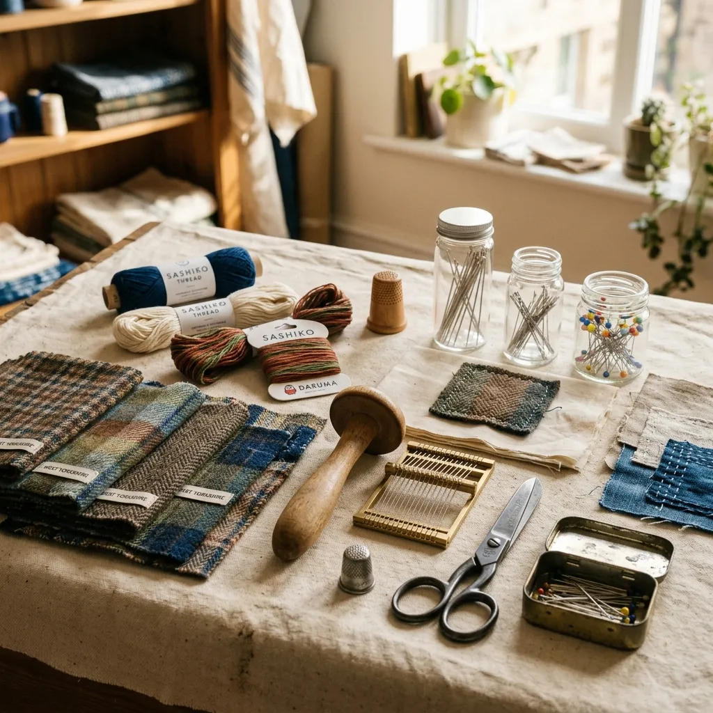

Repair Clothes Worth Keeping
Thoughtfully assembled repair kits and heritage fabrics delivered from West Yorkshire to help every stitch extend the life of garments you already love.
Most wardrobes contain pieces that deserve another season instead of another replacement. Patch & Parcel exists for people who would rather mend a favourite jumper than buy a disposable substitute. Working from Hebden Bridge, we pack carefully matched repair materials using cloth from Pennine Loom Works alongside practical guides that assume curiosity rather than expertise. Every parcel encourages slower ownership, visible craftsmanship and the satisfaction that comes from repairing something with your own hands instead of throwing it away.
Shop Now
Why Visible Mending Matters
Visible repairs tell the story of clothing that has earned another chapter. A contrasting patch across an elbow or a geometric sashiko pattern over worn denim creates character that factory finishes cannot imitate. Choosing to repair instead of replace also reduces waste, lowers demand for new textiles and encourages people to value workmanship over constant consumption. We never promise perfection; we promise repairs that remain honest about the life a garment has already lived. That philosophy shapes every product we design and every guide we publish, making practical skills approachable without stripping away their heritage.
The Weekender Repair Parcel
The Weekender Repair Parcel arrives once each month with enough carefully selected materials to complete several repairs without overwhelming beginners. Subscribers receive exclusive woven patches, colour-coordinated sashiko thread, durable repair needles, illustrated project cards and one feature material that cannot be purchased separately. Every edition explores a practical theme, from repairing denim knees to strengthening shirt collars or restoring wool knitwear. Rather than filling boxes with novelty items, every inclusion serves a purpose on a real garment. Customers frequently tell us they begin with one favourite jacket before moving through cupboards repairing forgotten pieces they had almost given away. That gradual transformation is exactly what the subscription was designed to encourage.
SubscribeFeatured Collections
The Denim Revival Kit
Working with heavy cotton requires robust tools and resilient materials. This comprehensive collection focuses strictly on extending the lifespan of jeans, work jackets, and heavy twill trousers. It contains reinforced iron-on backing pieces, dense cotton patches woven precisely to match indigo weights, and specialised needles that will not bend under pressure. The included guide demonstrates how to reinforce knees, patch pocket corners, and secure belt loops against future damage.
Shop NowThe Knitwear Rescue Set
Moth holes and dropped stitches require a delicate approach to prevent further unravelling. Our knitwear collection provides everything necessary to execute a structural darn or decorative embroidery over damaged areas. The kit features five complementary shades of pure Shetland wool thread, an ergonomic wooden darning mushroom turned by local craftsmen in West Yorkshire, and blunt tapestry needles designed specifically to slip between knitted rows without splitting the delicate fibres.
Shop NowCustomer Testimonials
"The materials provided in my first Weekender Repair Parcel were exceptional. The sashiko thread held its tension perfectly while I patched the elbows on my favourite work shirt. What impressed me most was the clarity of the instructional cards. Since subscribing three months ago, I have successfully repaired six distinct garments that I otherwise would have donated."
— Eleanor Davies, Architect
"After years of throwing away trousers the moment they wore through the knee, discovering this method of visible mending completely changed my perspective on clothing care. The Pennine Loom Works cotton patches feel incredibly substantial. It took only forty-five minutes to complete a repair that completely revitalised a five-year-old pair of jeans, extending their life significantly."
— Marcus Thorne, Cabinet Maker
"I appreciated that the kit did not assume any prior sewing knowledge. Everything required was included, right down to the specific needles for different weights of cloth. In just the first two weeks of my subscription, I managed to fix three woollen jumpers. I now actively look for small holes in my wardrobe just for the satisfaction of mending them."
— Sophie Lin, Graphic Designer
Read More Stories